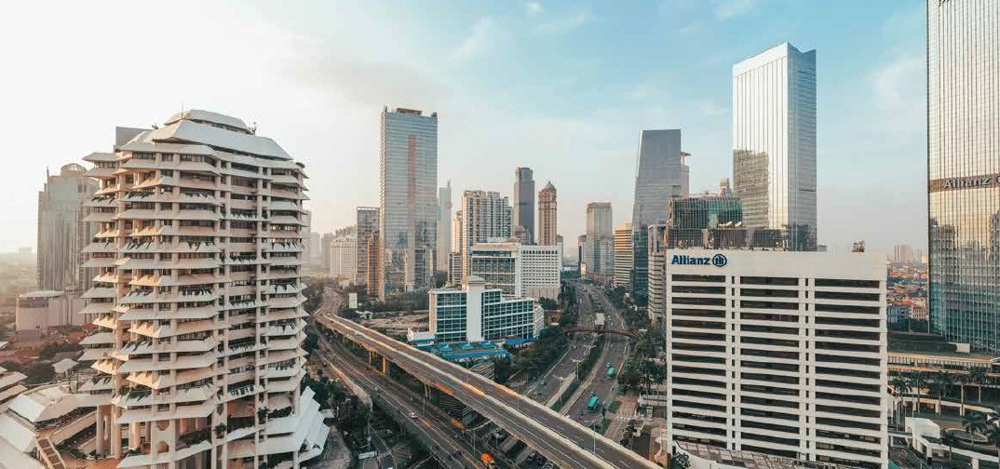
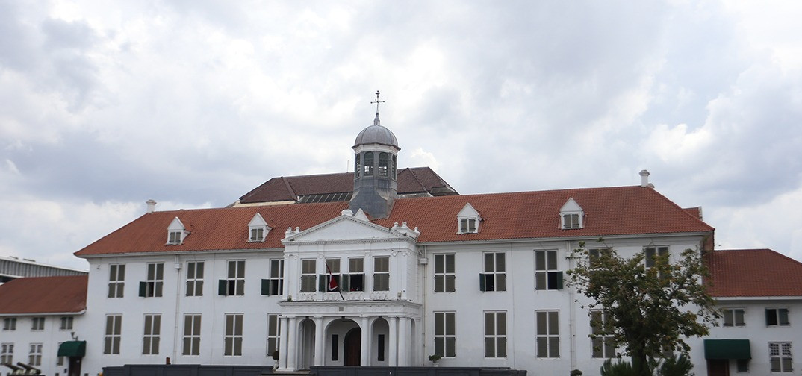
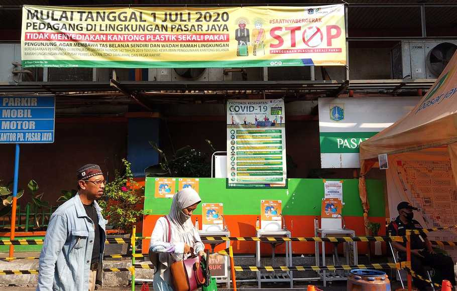
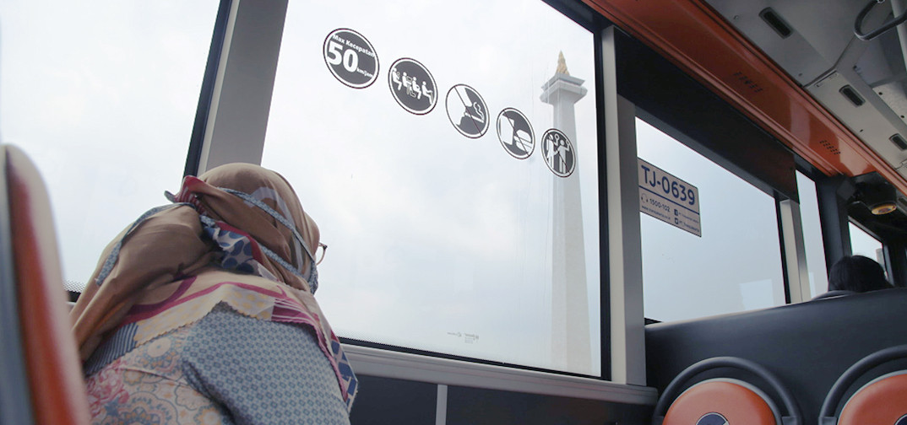
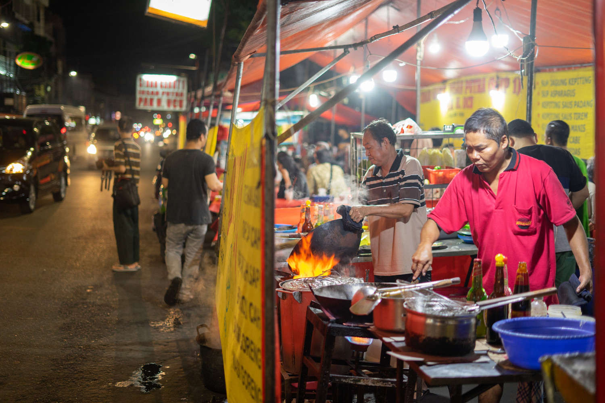
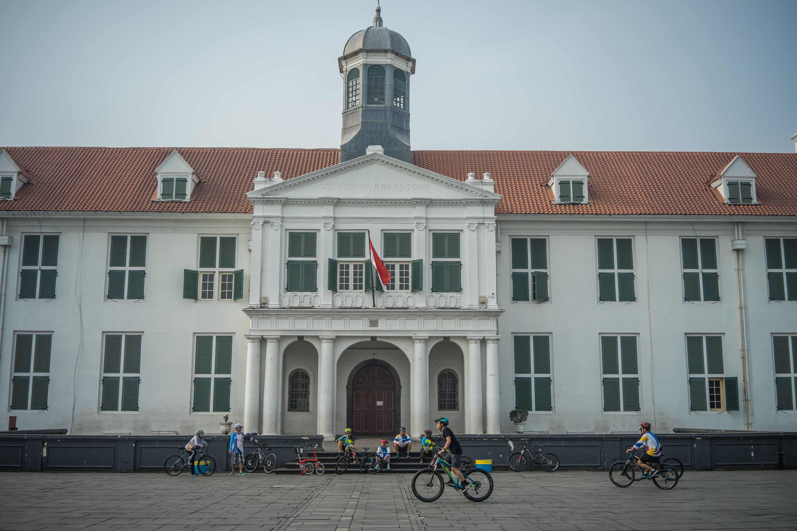

Tentang Jakarta

Jakarta adalah Ibu Kota Republik Indonesia. Provinsi DKI Jakarta terbagi menjadi
lima
wilayah Kota Administrasi dan satu Kabupaten Administrasi dengan luas keseluruhan wilayah 662,33
km².
Kota
Administrasi Jakarta Pusat dengan luas 48,13 km², Jakarta Utara dengan luas 146,66 km², Jakarta
Barat
dengan luas 129,54 km², Jakarta Selatan dengan luas 141,37 km², Jakarta Timur dengan luas 188,03
km²,
serta Kabupaten Administrasi Kepulauan Seribu dengan luas area 8,70 km².
Sejarah Jakarta

Jakarta
bermula dari pelabuhan kecil di estuari sungai Ciliwung sekitar 500 tahun yang lalu. Lambat laun,
pelabuhan kecil ini bertransformasi menjadi pusat perdagangan internasional yang mempertemukan ragam
bangsa di dunia. Rekam jejak Jakarta bisa ditemukan melalui beberapa prasasti yang ditemukan di
sekitar pelabuhan dan sepanjang sungai Ciliwung.
Kebijakan Kota

Kebijakan-kebijakan pemerintah berbasis ramah lingkungan mulai diterapkan di berbagai sektor. Hal
ini juga merambah pada penggunaan kantong plastik di pusat-pusat perbelanjaan di DKI Jakarta yang
dibatasi. Hal ini diterapkan karena keberadaan sampah plastik semakin mengkhawatirkan. Sampah
plastik merupakan sampah yang sulit terurai secara alamiah dan memiliki senyawa yang membahayakan.
Selain itu, plastik yang ringan dan tipis akan mudah terbawa angin dan mencemari lingkungan secara
masif. Kantong plastik tidak hanya menimbulkan tumpukan sampah, namun juga dapat menjadi penyebab
kematian berbagai hewan laut yang tidak sengaja memakan sampah plastik yang terbawa ke lautan.
Hidup Jakarta

Sebagai megapolitan dan kota terbesar di Indonesia, Jakarta menawarkan sejuta pesona. Kehidupan
urban, wisata alam, napak tilas sejarah, hingga kekayaan kebudayaan tradisional tersedia di seluruh
penjuru Jakarta.
Jakarta telah dan terus mengembangkan transportasi publik yang terintegrasi di tiap titiknya. Dengan
menaiki transportasi publik, Anda akan menghemat waktu, tenaga, sekaligus menikmati indahnya pesona
Kota Jakarta tanpa kendala.
Wisata Kuliner

Sebagai kota yang memiliki latar belakang penduduk beragam, Jakarta juga mempunyai kekayaan kuliner
beraneka. Dari yang harganya aman buat kantong, hingga yang budget-nya kelas hotel berbintang lima,
tersaji di Ibu Kota. Dari kuliner tradisional Betawi, makanan khas Minang, Jawa, Manado dan
lain-lain, sampai kuliner internasional seperti makanan khas India, Korea, Jepang, atau Western.
Wisata Sejarah

Jakarta memiliki banyak tempat bersejarah yang menarik untuk dikunjungi. Pengunjung dapat menikmati
objek wisata di Jakarta sekaligus menyelami masa silam bangunan bersejarah di ibu kota. Kota Tua
Jakarta (Batavia) berlokasi di wilayah administrasi kota Jakarta Barat dan Utara. Di atas lahan
seluas 1,3 kilometer persegi inilah, pemerintah Belanda membangun benteng, kanal, gedung
pemerintahan, serta perkantoran.
Kontak
Alamat: Jl. Medan Merdeka Selatan 8-9 Jakarta Pusat, Jakarta, Indonesia
Telp : (+6221) 382 2255
Faks : (+6221) 382 2255
Surel : dki@jakarta.go.id